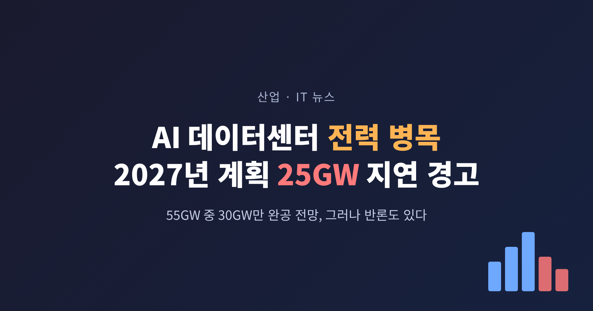
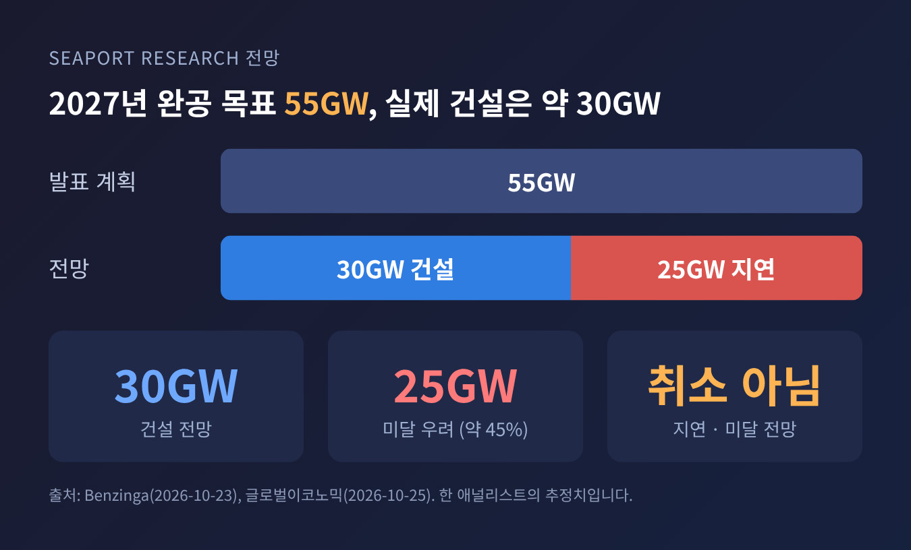
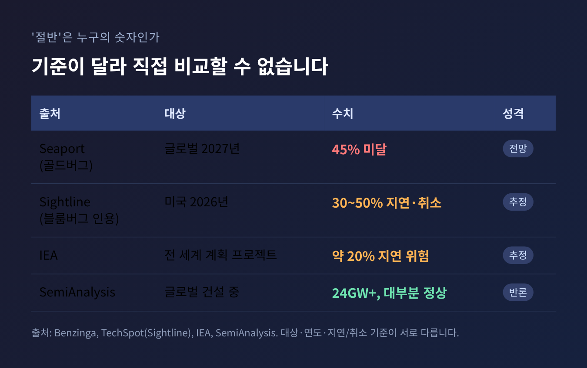
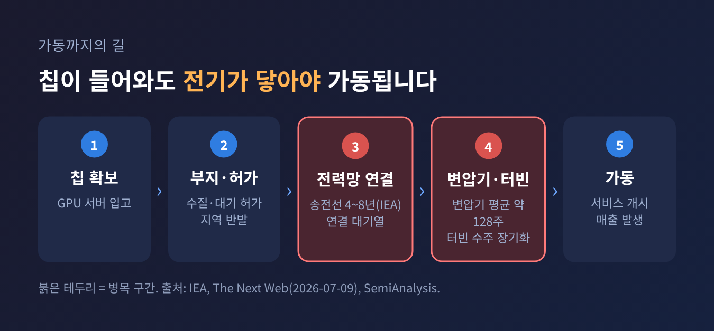
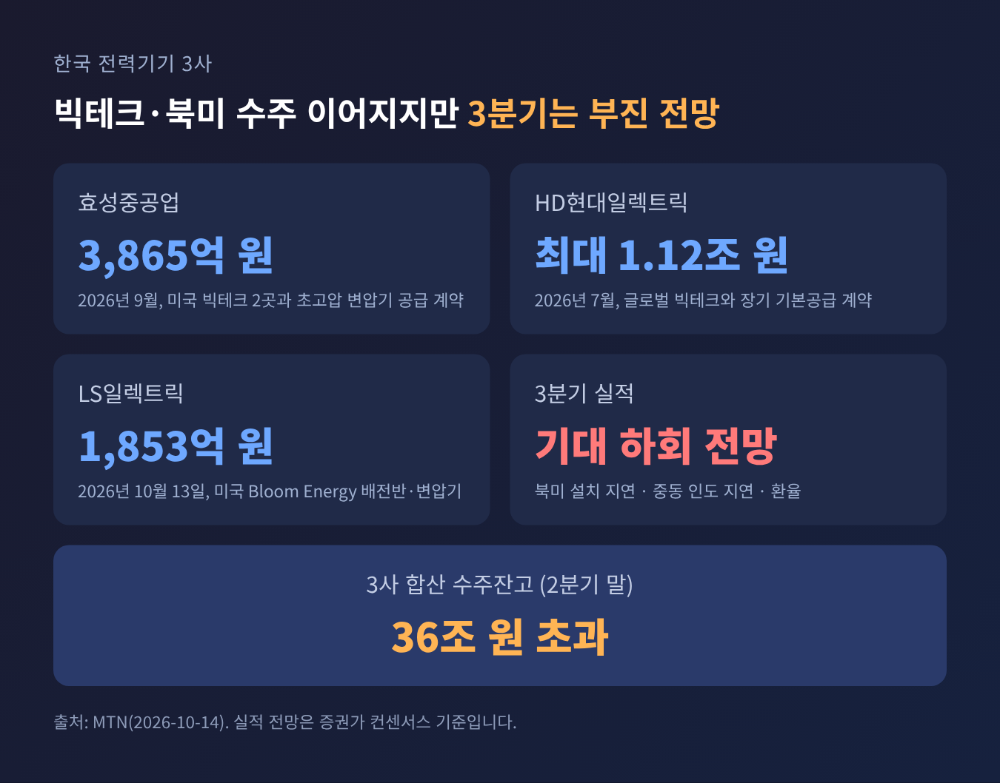
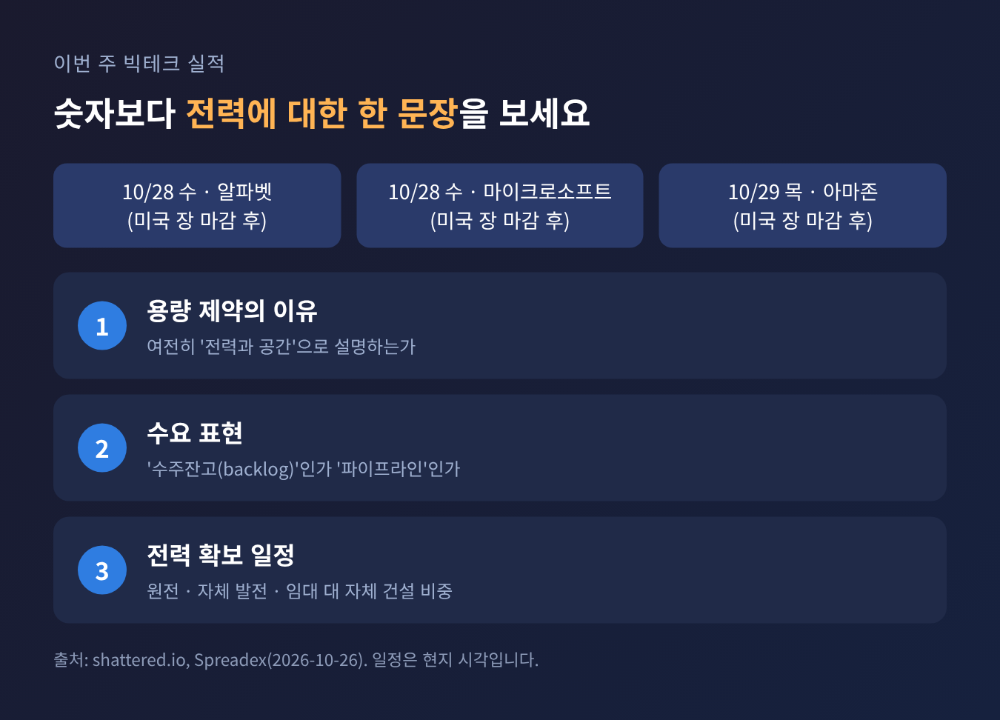

3줄 요약 - 월가 애널리스트 한 명이 "2027년 완공 목표 AI 데이터센터 55GW 중 약 30GW만 지어질 것"이라고 전망했습니다. 25GW, 약 45%가 일정에 못 맞춘다는 뜻입니다. - 일부 보도의 '절반 무산'은 과장에 가깝습니다. 취소가 아니라 지연·미달 전망이며, 반론도 만만치 않습니다. - 이번 주 알파벳·마이크로소프트·아마존 실적에서는 설비투자 금액보다 '전력을 언제 확보하느냐'는 발언이 관전 포인트입니다.
이번 글에서는 AI 데이터센터 전력 병목 논란이 어디까지 사실인지 정리해 보겠습니다. 원 보도의 수치를 다른 자료와 대조하고, 한국 전력기기 업계에 미치는 영향과 이번 주 빅테크 실적의 확인 지점까지 짚습니다.
■ 무슨 일이 있었나: 55GW 중 30GW
발단은 10월 23일(현지 시각) 나온 시포트리서치파트너스(Seaport Research Partners)의 엔비디아 보고서입니다. 제이 골드버그 애널리스트는 2027년 완공을 목표로 발표된 전 세계 AI 데이터센터 용량 55GW 중 약 30GW만 실제로 지어질 것으로 봤습니다. 나머지 25GW, 약 45%가 기한을 넘길 수 있다는 계산입니다. 그는 엔비디아에 '매도' 의견과 목표주가 180달러를 유지했습니다.
걸림돌로 꼽은 것은 세 가지입니다. 전기기술자 부족, 가스터빈 조달 지연, 전력망 연결 지연입니다. 칩은 만들어지는데 이를 꽂아 돌릴 건물과 전기가 따라오지 못한다는 이야기입니다.
보도에 따르면 사례도 나왔습니다. 마이크로소프트는 엔비디아가 투자한 스타트업 엔스케일(Nscale)의 영국 데이터센터 사업에서 빠졌습니다. 전력 연결이 2030년대로 밀렸기 때문입니다. 이 시설에는 엔비디아 GPU 2만 3천 개 이상이 들어갈 예정이었습니다. 아마존 창고에는 전력을 기다리는 엔비디아 서버가 쌓여 있다는 보도도 있습니다. 두 사례 모두 미국 매체 보도에 근거한 내용이며, 해당 기업의 공식 확인은 찾지 못했습니다.
같은 주 목요일(현지) 엔비디아 주가는 4.4% 내린 212.21달러로 마감했습니다. 이 하락이 전적으로 이번 전망 때문이라고 단정하기는 어렵습니다.

■ 왜 중요한가: 칩이 아니라 전기가 성장의 속도를 정한다
예전엔 AI 투자의 병목이 GPU 물량이었습니다. 지금은 전기입니다. 마이크로소프트의 사티아 나델라 CEO는 지난해 11월 "가장 큰 문제는 컴퓨트 과잉이 아니라 전력"이라고 했고, 꽂을 수 없어 재고로 쌓인 칩이 있을 수 있다고도 말했습니다. 에이미 후드 CFO는 공간과 전력이 여러 분기째 부족하다고 설명했습니다.
국제에너지기구(IEA)의 전망은 규모감을 줍니다. 전 세계 데이터센터 전력 소비는 2024년 약 415TWh에서 2030년 약 945TWh로 두 배 넘게 늘 전망입니다. 미국에서는 2030년까지 전력 수요 증가분의 거의 절반이 데이터센터에서 나옵니다. IEA는 계획된 프로젝트의 약 20%가 전력망 문제로 지연될 수 있다고 추정했습니다.
모건스탠리 추정은 더 구체적입니다. 월스트리트저널 보도를 인용한 국내 기사에 따르면, 내년 글로벌 데이터센터 전력 수요는 약 56GW인데 신규 공급은 약 51GW입니다. 2028년에는 수요 약 86GW에 공급 약 68GW로, 격차가 약 18GW로 벌어집니다.
엔비디아에게도 남의 일이 아닙니다. 보도된 바로는 엔비디아의 공급·용량 약정이 7월 26일 기준 2,790억 달러로, 한 분기 전 1,190억 달러의 두 배를 넘었습니다. 다만 다른 보도는 약 2,500억 달러로 적어 표기가 엇갈립니다. 저는 공시 주석에서 이 수치를 직접 확인하지 못했습니다. 엔비디아가 클라우드 업체에 보증과 지원을 제공하는 만큼, 데이터센터가 늦어지면 고객사의 수익과 엔비디아의 채권 건전성에 영향이 갈 수 있다는 것이 골드버그의 문제의식입니다.
■ 배경과 쟁점: '절반'은 누구의 숫자인가
'절반'이라는 표현은 이번이 처음이 아닙니다. 올해 4월 블룸버그가 시장분석업체 사이트라인 클라이밋(Sightline Climate) 자료를 인용해 보도했고, 이후 일부 매체가 "절반이 취소"라는 더 강한 제목으로 퍼뜨렸습니다. 사이트라인 자료에서는 2026년 미국 AI 데이터센터의 30~50%가 지연 또는 취소될 수 있다는 추정이 나왔습니다.
그런데 이 숫자들은 서로 기준이 다릅니다.

반론도 있습니다. 반도체 분석사 세미애널리시스(SemiAnalysis)는 전 세계 40개 캠퍼스에서 24GW 이상이 고급 단계로 건설 중이며 대부분 일정대로라고 주장합니다. 건설 중 물량이 과소 집계됐다는 입장입니다. 다만 이 회사는 자사 모델을 파는 입장이라는 점은 감안해야 합니다. 전력 대기열도 쟁점입니다. 텍사스 전력망(ERCOT)에는 410GW가 넘는 대규모 부하 연결 요청이 몰려 있지만 이 지역 첨두 수요는 약 85GW 수준이어서, 상당수가 투기적 신청이라는 지적이 나옵니다.
정리하면 이렇습니다. '일부 지연'은 여러 자료가 공통으로 가리키지만, '절반이 무산'은 한 사람의 전망입니다.
■ 병목은 어디에 있나: 변압기, 터빈, 그리고 허가
실제로 지연을 만드는 병목은 눈에 보이는 장비들입니다. 더 넥스트 웹(The Next Web)이 산업 조사기관 자료를 집계한 바로는, 대형 전력용 변압기 납기는 큰 규모의 경우 3~5년으로 길어졌습니다. 미국 평균 변압기 납기는 약 128주입니다. 일부 스위치기어는 2028년까지 예약이 끝난 상태입니다. GE 버노바(GE Vernova)의 가스터빈 수주잔고는 올해 1분기 100GW였습니다. 다만 이중 발주로 수주잔고가 부풀려졌을 수 있다는 경고도 함께 나옵니다.
IEA도 비슷한 진단을 내놨습니다. 송전선 신설에는 선진국에서 4~8년이 걸리고, 변압기와 케이블 대기 기간은 3년 새 두 배로 늘었습니다.

허가와 지역 반발도 변수입니다. 오라클의 뉴멕시코 '프로젝트 주피터'가 대표 사례입니다. 대출 180억 달러가 걸린 이 캠퍼스에서 오라클은 불가항력(force majeure) 통지를 냈고, 2028년 가동이 어렵다면 지급 의무를 미뤄 달라는 입장으로 알려졌습니다. 전력 확보 지연 가능성, 가스 파이프라인 지연, 수질·대기 허가 분쟁이 사유로 거론됩니다.
■ 빅테크의 해법: 원전과 자체 발전, 그러나 시간이 걸립니다
빅테크는 전력을 직접 확보하는 쪽으로 움직입니다. 카네기국제평화재단 정리에 따르면 빅테크의 원전 관련 약정은 모두 합쳐 최대 약 13GW입니다. 메타와 비스트라(Vistra)의 2.6GW 계약, 아마존과 탈렌(Talen)의 1.9GW 계약, 마이크로소프트의 스리마일섬 1호기 재가동(0.835GW, 2027년 목표) 등이 포함됩니다.
문제는 속도입니다. 약정이 전부 실현돼도 연 약 102TWh로, 2035년까지 미국 데이터센터 수요의 20%에 못 미친다는 분석입니다. 신규 원전은 계획에서 가동까지 보통 10~15년이 걸립니다. 그래서 가스터빈이나 연료전지로 계통 연결을 건너뛰는 '자체 발전(behind-the-meter)'이 대안으로 떠오릅니다. 그러나 가스터빈 자체가 병목입니다. 우회로가 또 다른 대기줄로 이어지는 셈입니다.
■ 한국 업계 파급: 전력기기는 수혜, 반도체는 시차
국내에서는 전력기기가 가장 직접적인 접점입니다. 효성중공업, HD현대일렉트릭, LS일렉트릭 3사의 합산 수주잔고는 올해 2분기 말 36조 원을 넘었습니다. 최근 계약도 이어졌습니다.

다만 단기 실적은 다릅니다. 3분기는 북미 프로젝트 설치 지연, 중동 인도 지연, 환율 영향으로 시장 기대에 못 미칠 것으로 전망됩니다. 전력망 연결과 설치 일정이 늦어지면 수주가 매출로 바뀌는 시점도 밀리기 때문입니다. 애널리스트들은 일회성이며 중장기 성장은 유지된다고 보지만, 장기 계약과 계통 연결, 최종투자결정(FID)이 차별화 요인이라는 지적도 나옵니다.
반도체는 시차의 문제입니다. 삼성전자와 SK하이닉스의 3분기 영업이익 전망치는 합산 약 190조 원으로, 모두 AI 데이터센터 수요가 배경입니다. 확정 실적은 이번 조사에서 확인하지 못했습니다. 마이크론 CEO가 2027년 HBM 물량 대부분이 이미 계약됐다고 밝힌 만큼 당장 수요가 꺾이는 신호는 없습니다. 다만 데이터센터 가동이 늦어지면 서버 출하와 증설 시점이 밀릴 수 있다는 것은 논리적 가능성일 뿐, 국내 업체가 실제 영향을 받았다는 근거는 찾지 못했습니다.
■ 이번 주 실적에서 볼 것
알파벳과 마이크로소프트는 28일, 아마존은 29일(이상 현지 시각, 장 마감 후) 실적을 발표합니다. 설비투자 총액은 이미 시장에 알려진 상태입니다. 그보다는 아래 지점을 보시길 권합니다.

첫째, 용량 제약이 여전히 '전력과 공간'으로 설명되는지입니다. 둘째, 수요를 '수주잔고'로 부르는지 '파이프라인'으로 부르는지입니다. 셋째, 자체 발전이나 원전 계약에 대한 구체적 일정이 나오는지입니다. 발언이 구체적일수록 병목이 풀리는 속도를 가늠하기 쉬워집니다.
정리하면 이렇습니다. 전력 병목은 분명한 현실이지만, '절반 무산'은 한 애널리스트의 전망일 뿐 확정된 사실이 아닙니다.
AI 투자의 속도를 정하는 것은 이제 칩 성능이 아니라 변압기 납기와 허가, 그리고 전선입니다. 이번 주 실적에서 그 속도에 대한 단서가 나온다면, 시장은 숫자보다 한 문장에 더 크게 반응할지도 모릅니다.
본 글은 공개된 보도와 자료를 정리한 정보 제공 목적의 해설이며, 특정 종목의 매수·매도를 권유하는 투자 권유가 아닙니다. 인용한 전망치는 해당 기관·애널리스트의 추정으로 실제와 다를 수 있습니다. 투자 판단과 책임은 투자자 본인에게 있습니다.